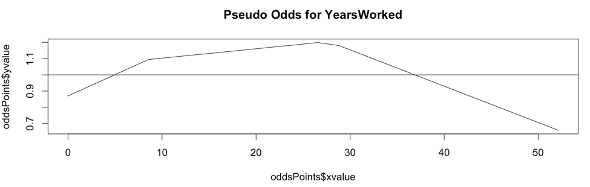
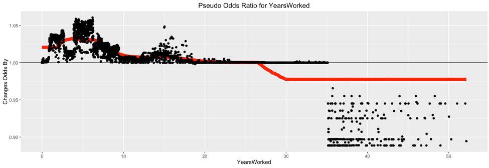
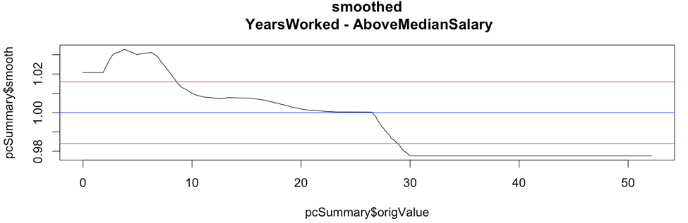
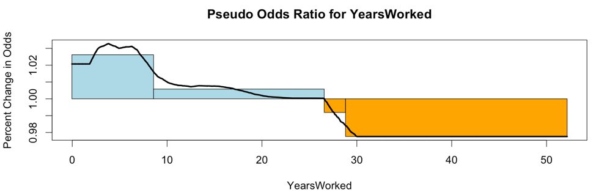
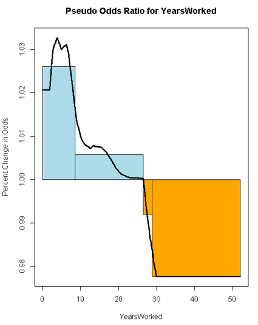
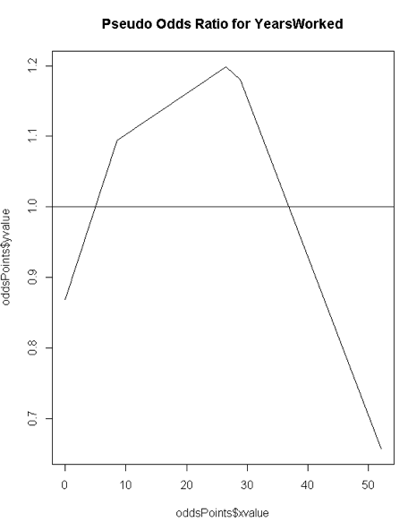
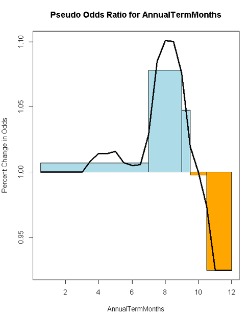
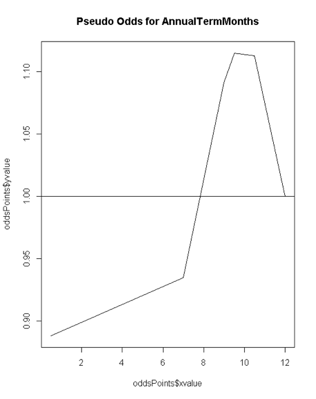

Get Your "all-else-held-equal" Odds-Ratio Story for Non-Linear Models!
Practical walkthroughs on machine learning, data exploration and finding insight.

Resources
On one hand we have tree-based classifiers and deep-belief networks and on the other, linear regression models. What the latter lacks in terms of coolness and precision certainly makes up in transparency and actionability. People just love their coefficients and odd ratios. Here is an approach to extract odds out of tree-based classifiers so you too can say 'all else held equal, a one unit change in x, will result in a pseudo-coefficient change of something in y'. The bonus here is that we capture non-linear movements - this can yield a lot of intelligence out of your variables!

The above chart is the Pseudo Odds for the amount of years worked at the Texas A&M University (source: The Texas Tribune). The outcome variable is whether an employee's salary is above the overall median salary. Though we will look at this chart in more detail shortly, you can say that your best odds of being a top earner is at 28 years of service or more precisely, you have 20% better odds of earning above the medium salary at 28 years of service. Pretty informative, right?
I didn't coin the term nor the algorithm, that came from my friend and colleague, Tristan Markwell, who agreed to share this with the world. My small contribution was to nail down the plots.
How Does it Work?
For a high-level explanation, first train a classification model and feed testing data into it to extract probabilities for a particular binary outcome. Then, one feature at a time, shift each of its points one unit up and feed that into the model. This becomes your up-one-unit probabilities for that feature. Do the same but in the opposite direction by shifting the feature data down one unit. Finally, calculate the slope between the up-one-unit and down-one-unit probabilities. Smooth the slopes to simplify patterns and analyze away!
The code is a bit more complex and experimental in nature so bear with me. It is composed of four logical steps and I added charts throughout most steps from a feature called ‘YearsWorked’ off of the Texas A&M salary data set. The outcome variable is whether a particular employee is above the median salary.
Step 1: Base Model
We first model the data using XGBoost (but any classification model will do) and get a prediction vector using a test data set.
Step 2: Average Slopes for each Feature Points
We then loop through each feature and call the ‘get_avg_slope’ function. As its name implies, it returns average slopes for each feature by shifting the feature values up and down a unit in the testing data and returns the slopes between the shifted points. In more detail:
- Pass original prediction vector
- Get unique values in feature
- Figure out jump size: take 1/20th of the number of values (if there are 100 unique values, you go 5 to the right, and 5 to left)
- Shift each value in the feature up one jump size and predict this new set while all other features held constant
- Do the same down one jump size and predict this new set while all other features held constant
- Save the two resulting vectors of shifted predictions
- Take the slope between the up point and down point
- If you hit a wall then use half way point
- Return the average of all slopes per value
Here is a raw plot of the pseudo odds ratios for YearsWorked:

Step 3: Odd Ratio Rectangles
Calculate the odd-ratio rectangles. Each rectangle captures the speed of the move on using the smoothed odd ratio points. The rectangle is drawn by capturing each movement up one standard deviation from the median and back down one standard deviation mark. The height of the rectangle represents the speed at which the feature moves across its units.
Here is a plot of the smoothed pseudo odds ratios for YearsWorked with both standard deviation lines shown:

Here is a smoothed plot of the pseudo odds ratios for YearsWorked with directional boxes from the standard deviation crossovers:

Step 4: Calculating Odds
Each rectangle represents the odds ratio for that area. To turn it into odds we need to apply a little math. The x-value is easy, its the right-end point of each rectangle, and, at that point, the y-value is the cumulative sum of the area of that rectangle. We then find the median box (the one where the median value of the feature fits best) and adjust the vertical level of the odds line according to that box so the median sits at value 1.
Here is the chart resulting from all this work. It delivers a clear visual of varying odds at different unit points (we'll analyze this feature and another in the next section):
Chart Analysis
The chart below is the odds ratio for 'YearsWorked'. It shows four boxes where the first is increasing fast, the second slow, the third is decreasing slow, and the last is decreasing fast. In odds ratio parlance, the first box has the odds ratio increasing upwards rapidly, and so on and so forth.

The Pseudo Odds chart for 'YearsWorked' shows that a brand new worker is 12% less likely than a tenured worker to be a top earner. Your best odds of being a top earner are at 28 years of service - you can say they have 20% better odds at earning top salaries (or more precisely above the median salary).

The Odds Ratio chart for 'Annual Term Months' shows an initial moderate rise that accelerates around the middle of the chart and finally drops fast.

The Pseudo Odds chart for 'Annual Term Months' shows a 10% odds of being under the median salary for the first 7 terms, a 10% odd of hitting a peak median salary around the 9-10th term.

Source Code
Note: The data is from the Texas Tribune - Government Salaries Explorer and is in the form of an xlsx file. I commented out the code to download it directly as a lot of systems struggle with the XLConnect library. You can either uncomment the code or download the file manually at (http://raw.texastribune.org.s3.amazonaws.com/texas_a%26m_university_system/salaries/2015-09/tamu_2015-09-09.xlsx) and save it on your local machine as a csv file.
# libraries
library(ggplot2)
library(dplyr)
library(mlbench)
library(xgboost)
library(zoo)
# data --------------------------------------------------------------------
# library(XLConnect)
#
# # https://salaries.texastribune.org/texas-am-university/
#
# tmp = tempfile(fileext = ".xlsx")
# download.file(url = "http://raw.texastribune.org.s3.amazonaws.com/texas_a%26m_university_system/salaries/2015-09/tamu_2015-09-09.xlsx", destfile = tmp, mode="wb")
# gov_salary_df <- readWorksheetFromFile(file = tmp, sheet = "OR SO-15-088", header = TRUE, startRow = 1)
# load locally saved text file
gov_salary_df <- read.csv('/Users/manuelamunategui/Downloads/tamu_2015-09-09.csv', stringsAsFactors=FALSE)
# clean out useless features
gov_salary_df <- dplyr::select(gov_salary_df, -LastName, -FirstName, -MiddleInitial, -ShortTitleDesc, -ShortAdlocDesc)
# Calculate the difference and divide by 365 for number of years
gov_salary_df$CurrEmplDate <- as.Date(gov_salary_df$CurrEmplDate, format='%d-%b-%Y')
origDate <- as.Date('2015-09-01')
gov_salary_df$YearsWorked <- as.numeric((origDate-gov_salary_df$CurrEmplDate)/365.)
# clean up salary
# gov_salary_df$BudgetedSalary <- gsub(x=gov_salary_df$BudgetedSalary, pattern = '\\$|\\,', replacement = '')
Above_Median_Salary <- median(gov_salary_df$BudgetedSalary, na.rm=TRUE)
outcome_name <- 'AboveMedianSalary'
gov_salary_df$AboveMedianSalary <- ifelse(gov_salary_df$BudgetedSalary > Above_Median_Salary, 1, 0)
# clean out more useless features
gov_salary_df <- dplyr::select(gov_salary_df, -CurrEmplDate, -BudgetedSalary, -MbrName)
# force variables to numeric
gov_salary_df$Sex <- as.numeric(as.factor(gov_salary_df$Sex))
gov_salary_df$FullorPartTime <- as.numeric(as.factor(gov_salary_df$FullorPartTime))
gov_salary_df$EEOMinorityCode <- as.numeric(gov_salary_df$EEOMinorityCode)
gov_salary_df$StudentStaffFaculty <- as.numeric(gov_salary_df$StudentStaffFaculty)
# impute NAs with median feature value
for (feature in names(gov_salary_df)){
print(feature)
gov_salary_df[is.na(gov_salary_df[,feature]),feature] <- median(gov_salary_df[,feature], na.rm=T)
}
# model -------------------------------------------------------------------
# xgboost model
set.seed(1234)
dtrain <- xgb.DMatrix(data.matrix(gov_salary_df), label=gov_salary_df[,outcome_name], missing=NA)
param <- list( objective = "binary:logistic",
eta = 0.002,
max_depth = 3,
subsample = 0.7,
colsample_bytree = 0.7,
eval_metric = "auc",
alpha = 0.0001
)
set.seed(1234)
xgb_model <- xgb.train( params = param,
data = dtrain,
nrounds = 500,
verbose = 0,
maximize = TRUE)
feature_names <- setdiff(names(gov_salary_df),outcome_name)
# check top 20 most important features
importance_matrix <- xgb.importance(feature_names=feature_names, model = xgb_model )
print(head(importance_matrix,20))
# pseudo coefficients -------------------------------------------------------
get_avg_slope <- function(original_model, original_data, feature) {
allValues <- unique(original_data[, feature])
allValues <- allValues[order(allValues)]
curr_preds <- predict(original_model, as.matrix(original_data), missing=NaN, outputmargin=FALSE)
pcDF <- data.frame(original = curr_preds, origValue = original_data[, feature])
whichValue <- ifelse(is.na(original_data[, feature]), NA, match(original_data[, feature], allValues))
# set jump size to capture effect under different units - acceptable jump size (default is 5% of # of values)
jumpSize <- pmax(round(length(allValues)/20, 0), 1)
pcDF$nextValue <- ifelse(whichValue >= length(allValues) + jumpSize, NA, allValues[whichValue + jumpSize])
pcDF$priorValue <- ifelse(whichValue <= jumpSize, NA, allValues[pmax(whichValue - jumpSize, 1)])
# predict again with feature values raised one unit
temp <- as.matrix(original_data) #for xgboost
temp[, feature] <- pcDF$nextValue
pcDF$upOne <- predict(original_model, temp, missing=NaN, outputmargin=FALSE)
# predict again with feature values dropped one unit
temp <- as.matrix(original_data) #for xgboost
temp[, feature] <- pcDF$priorValue
pcDF$downOne <- predict(original_model, temp, missing=NaN, outputmargin=FALSE)
# get logit to extract
pcDF$origLogit <- log(pcDF$original/(1-pcDF$original))
pcDF$priorLogit <- log(pcDF$downOne/(1-pcDF$downOne))
pcDF$nextLogit <- log(pcDF$upOne/(1-pcDF$upOne))
# calculate slope
pcDF$slope <- (pcDF$nextLogit - pcDF$priorLogit)/
ifelse(is.na(pcDF$nextValue - pcDF$priorValue), mean(pcDF$nextValue - pcDF$priorValue, na.rm = TRUE),
pcDF$nextValue - pcDF$priorValue)
if ( sum(!is.nan(pcDF$slope))==0) {
print('binary feature')
pcDF$slope <- ifelse(is.na(pcDF$priorValue),
(pcDF$nextLogit - pcDF$origLogit) / (pcDF$nextValue - pcDF$origValue),
(pcDF$origLogit - pcDF$priorLogit) / (pcDF$origValue - pcDF$priorValue))
}
pcDF %>% group_by(origValue) %>% summarize(avgSlope = mean(slope)) -> pcSummary
pcSummary$avgSlope <- exp(pcSummary$avgSlope)
return(pcSummary)
}
# get original data
origData <- gov_salary_df[,setdiff(names(gov_salary_df),outcome_name)]
origModel <- xgb_model
# loop through each feature and get average slopes, odds ratio and odds
for (feature in feature_names) {
print(feature)
rects <- c()
temp_origData <- origData
pcSummary <- get_avg_slope(original_model = origModel, original_data=temp_origData, feature=feature)
new_points <- pcSummary$avgSlope
if (length(pcSummary$avgSlope) > 3) {
smoother = floor(length(pcSummary$avgSlope)/5)
pcSummary$smooth <- rollmean(pcSummary$avgSlope, k=smoother, fill="extend")
print(ggplot(pcSummary, aes(x=origValue,y=avgSlope)) +
labs(x = feature, y = 'Changes Odds By') + geom_hline(aes(yintercept=1)) + ggtitle(paste0('Pseudo Odds Ratio for ', feature)) +
geom_line(mapping = aes(x=origValue,y=smooth), data = pcSummary[, c('origValue', 'smooth')],
size = 3, color = 'red') +
geom_point())
} else {
pcSummary$smooth <- pcSummary$avgSlope
}
median_mark <- 1 # median(pcSummary$smooth)
stdv <- sd(pcSummary$smooth)
if (length(pcSummary$smooth) > 2) {
pcSummary %>%
add_rownames() %>%
dplyr::filter((smooth < median_mark & lead(smooth, n=1) > median_mark) |
(smooth > median_mark & lead(smooth, n=1) < median_mark) |
(smooth < median_mark + stdv & lead(smooth, n=1) > median_mark + stdv) |
(smooth > median_mark + stdv & lead(smooth, n=1) < median_mark + stdv) |
(smooth < median_mark - stdv & lead(smooth, n=1) > median_mark - stdv) |
(smooth > median_mark - stdv & lead(smooth, n=1) < median_mark - stdv)) %>%
dplyr::mutate(rowname = as.numeric(rowname)) %>%
data.frame -> important_turns
previous_row <- 1
last_turn_x <- pcSummary$origValue[previous_row]
last_turn_y <- pcSummary$smooth[previous_row]
for (turn_idx in seq(nrow(important_turns))) {
# get x coordinates
max_x <- important_turns$origValue[turn_idx]
min_x <- last_turn_x
last_turn_x <- max_x
current_row <- important_turns$rowname[turn_idx]
# get y coordinates
vector_ys <- pcSummary$smooth[previous_row:current_row]
y <- mean(vector_ys) # ifelse(mean(vector_ys) > median_mark, max(vector_ys), min(vector_ys))
rects <- rbind(rects, c(min_x, median_mark, max_x, y))
previous_row <- current_row
if (turn_idx == nrow(important_turns)) {
# last rectangle
vector_ys <- pcSummary$smooth[previous_row:length(pcSummary$origValue)]
y <- ifelse(mean(vector_ys) > median_mark, max(vector_ys), min(vector_ys))
rects <- rbind(rects, c(last_turn_x, median_mark, pcSummary$origValue[length(pcSummary$origValue)], y))
}
}
} else {
# only two points so create three cubes
rects <- rbind(rects, c( pcSummary$origValue[1], median_mark, (pcSummary$origValue[1] + pcSummary$origValue[2]) / 2, pcSummary$smooth[1]))
rects <- rbind(rects, c( (pcSummary$origValue[1] + pcSummary$origValue[2]) / 2, median_mark, pcSummary$origValue[2], pcSummary$smooth[2]))
}
# plot data and build rectangles for each positive and negative zones
plot(pcSummary$origValue,pcSummary$smooth, type='l',
main=(paste0('Pseudo Odds Ratio for ', feature)),
xlab=feature, ylab="Percent Change in Odds")
for (coord_id in seq(nrow(rects))) {
if (rects[coord_id,4] > median_mark) {
rect(rects[coord_id,1], rects[coord_id,2],
rects[coord_id,3], rects[coord_id,4], col="lightblue", border="black")
}
if (rects[coord_id,4] < median_mark) {
rect(rects[coord_id,1], rects[coord_id,2],
rects[coord_id,3], rects[coord_id,4], col="orange", border="black")
}
}
lines(pcSummary$origValue, pcSummary$smooth, type = 'l', lwd=3, main=(paste0('Pseudo Odd for ', feature)))
abline(h = 0,lwd=3,lty=2)
# build odds chart
oddsPoints <- data.frame(xvalue=rects[,3], yvalue=cumsum((rects[,4] - rects[,2])*(rects[,3] - rects[,1])))
oddsPoints <- rbind(data.frame(xvalue=rects[1,1], yvalue=0), oddsPoints)
whichBox <- which((rects[,1] <= median(temp_origData[, feature])) & (rects[,3] >= median(temp_origData[, feature])))[1]
alpha <- (oddsPoints[whichBox + 1, 1] - median(temp_origData[, feature]))/(oddsPoints[whichBox + 1, 1] - oddsPoints[whichBox, 1])
oddsPoints$yvalue <- 1 + oddsPoints$yvalue - (alpha*oddsPoints[whichBox, 2] + (1-alpha)*oddsPoints[whichBox + 1, 2])
plot(oddsPoints$xvalue, oddsPoints$yvalue, type='l', main=(paste0('Pseudo Odds for ', feature)))
abline(h=1)
}
For more information on How do I interpret odds ratios in logistic regression? from UCLA's Institute for Digital Research and Education.